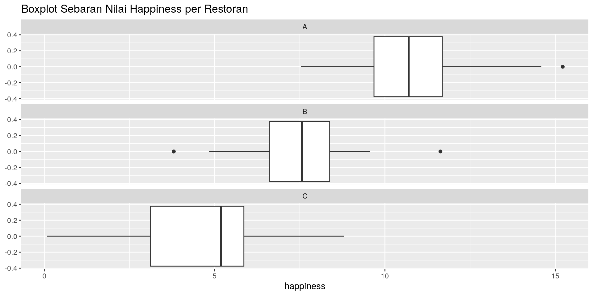

V1 V2 V3
resto A B C
mean_ 10.84 7.28 4.62Multi Armed Bandit
Sebuah Learning Forum
ikanx101.com
Market Research Dept. Nutrifood
INTRO
Latar Belakang
Apa itu
multi armed bandit?
Misalkan:
Anda dipindahtugaskan ke suatu area tertentu selama 30 hari. Karena suatu alasan, setiap malam Anda hanya bisa makan di restoran / tempat makan saja.
Di area tersebut ada tiga buah restoran / tempat makan. Anda sama sekali tidak punya informasi apapun terkait restoran tersebut (menu, harga, rasa, ambience, dll).
Bagaimana caranya Anda bisa menemukan tempat makan favorit?
Beberapa Istilah Penting
Tempat makan terfavorit adalah tempat makan yang memberikan nilai happiness tertinggi di makanan-makanan yang dikonsumsi oleh Anda.
Nilai happiness merupakan simplifikasi dan gabungan dari nilai rasa dan harga dari setiap menu makanan.
Selain itu, ada istilah regret yang berarti nilai yang “hilang” (kerugian) saat kita kehilangan kesempatan untuk mengkonsumsi makanan lain yang lebih enak daripada yang kita pilih.
Simulasi
Resto A
Restoran ini memiliki 15 buah menu.
Resto B
Restoran ini memiliki 17 buah menu.
Resto C
Restoran ini memiliki 13 buah menu.
Key Take Points dari Simulasi
Kita tidak mengetahui distribusi happiness dari masing-masing restoran.
Sampai kita mencoba terlebih dahulu masing-masing menu.
Seandainya kita mengetahui distribusi nilai hapiness dari masing-masing resto sebagai berikut:

Apakah decision making process kita berbeda?
Kita bisa memilih restoran A yang memiliki nilai happiness yang besar.
Key Take Points dari Simulasi
Ada kalanya kita:
- Looking for another resto ATAU
- Stay with the best resto we had so far
Oleh karena itu ada istilah exploration dan exploitation.
Kedua istilah ini sering digunakan dalam hal data science (termasuk dalam pengembangan Nutrex).
Key Take Points dari Simulasi
Exploration
Looking another option inside same resto.
Exploitation
Looking another option in another resto.
Menemukan The Best Restaurant
Please share your strategy!
Menemukan The Best Restaurant
Untuk menentukan strategi mana yang lebih baik di antara yang lain, kita bisa mengukur seberapa kecil regret yang bisa kita raih dari strategi tersebut.
Regret didefinisikan sebagai selisih antara max total happiness yang bisa didapatkan (expected) dengan total happiness yang didapatkan pada strategi tersebut.
Menemukan Strategies
Ingat kembali grafik berikut:
Menemukan Strategies
Expected Max Happiness
Expected happiness tertinggi didapatkan jika kita selalu memilih restoran A selama 30 hari.
\[\text{happiness}_T = 30 \times \text{mean happiness}_A\]
[1] 325.2Menemukan Strategies
Ada beberapa strategi yang bisa kita lakukan:
- Naive strategies (explore only dan exploit only).
- \(\epsilon\) - greedy strategy.
- Zero-regret strategy.
Naive Strategies
Explore Only
Selama masing-masing 10 hari, kita akan explore ke masing-masing restoran.
\[\text{regret}_\text{total} = \text{happiness}_T - \sum_{i = A}^C 10 \times \text{mean happiness}_i\]
[1] 97.8Naive Strategies
Exploit Only
Selama tiga hari pertama, kita akan mencoba masing-masing satu menu dari tiap restoran. Restoran yang memiliki nilai happiness terbaik akan kita pilih selama sisa 27 hari ke depan.
\[\text{regret}_\text{total} = \text{happiness}_T - (\sum_{i = A}^C \text{happiness}_i + 27 \times \text{happiness}_{\text{best 3 days}} )\]
# A tibble: 3 × 2
resto happiness
<chr> <dbl>
1 A 7.54
2 B 9.56
3 C 1.33[1] 48.65\(\epsilon\) Greedy Strategy
Algoritma
1 pilih masing-masing restoran sekali
2 pada iterasi ke t:
generate epsilon [0,1]
if(epsilon < 0.3) do
pilih restoran terbaik
pilih menu yang ada
else pilih resto acak
pilih menu yang ada
simpan happiness tiap menu resto pada
setiap iterasiDefinisi
- Penentuan restoran terbaik di setiap iterasi adalah rata-rata happiness yang didapatkan selama proses berlangsung.
- Angka \(\epsilon\) didapatkan dari random number generator pada selang 0 hingga 1.
- Angka
0.3sebagai batas pemilihan bisa diganti sesuai dengan selera.
\(\epsilon\) Greedy Strategy
Ilustrasi
Misal, pada tiga hari pertama, kita keliling tiga restoran dan mendapatkan nilai happiness sebagai berikut:
hari_1 hari_2 hari_3
resto A B C
happiness 10.70 6.93 1.33Terlihat bahwa resto terbaik dari data di atas adalah: Resto A.
. . .
Kemudian kita generate angka \(\epsilon\) secara random, misalkan \(\epsilon =\) 0.04. Berdasarkan nilai tersebut, maka restoran selanjutnya adalah A.
\(\epsilon\) Greedy Strategy
Ilustrasi Iterasi Selanjutnya
for(iter in 4:30){
# kita lakukan iterasinya
df_iter = df |> filter(resto == pilihan_berikutnya)
df_iter$pilih = runif(nrow(df_iter),0,1)
df_iter =
df_iter |>
filter(pilih == min(pilih)) |>
select(-pilih) |>
mutate(hari = iter,
eps = epsilon)
# kita gabungin dulu
round_t = bind_rows(round_t,df_iter)
# next round
round_1 =
round_t |>
group_by(resto) |>
summarise(happiness = sum(happiness)) |>
ungroup()
# pilihan berikutnya
epsilon = runif(1,0,1) |> round(2)
pilihan_berikutnya =
ifelse(epsilon < 0.4,
# kalau selain itu kita random resto yang lain
sample(round_1$resto,1),
# seandainya < 0.8 maka yang dipilih adalah yang terbaik
round_1$resto[which.max(round_1$happiness)]
)
}
total_happiness = sum(round_t$happiness)
total_happiness = round(total_happiness,2)
round_t |>
mutate(cum_hap = cumsum(happiness)) |>
ggplot(aes(x = hari,y = cum_hap)) +
geom_line(group = 1,color = "gray",alpha = .4) +
geom_point(aes(color = resto)) +
scale_color_manual(values = c("green","blue","brown")) +
theme_minimal() +
labs(x = "Hari ke - ",
y = "Cumulative Happiness",
title = paste0("Total Regret: ",
round(max_hap - total_happiness,2)
)
)Zero-Regret Strategy
Zero regret is an ambitious goal in the multi-armed bandit problem, implying that over time, the algorithm’s performance converges to that of the optimal arm. While it’s theoretically possible to achieve zero regret asymptotically, practically, algorithms often aim to minimize regret rather than completely eliminate it.
Zero-Regret Strategy
Math expression:
For the time \(t\), pick restaurant \(r\) such that:
\[\hat{\mu}_r + \sqrt{\frac{2 \ln{t}}{N_t(r)}}\]
is maximized.
Definisi:
- \(\hat{\mu}_r\) adalah rata-rata happiness we got so far.
- \(N_t(r)\) adalah frekuensi kita berkunjung ke restoran \(r\) so far.
Proses pemilihannya mirip dengan \(\epsilon\) greedy dengan penambahan upper confidence bound.
Simpelnya seperti ini:
We’ve been there twice (or many times), so let’s give them another chance…
Prosesnya menyeimbangkan exploration dan exploitation.
- Jika ada beberapa restoran dengan nilai \(\mu\) yang sama, restoran yang dikunjungi lebih sedikit akan berpeluang lebih besar dikunjungi (exploitation).
- Setelah berjalan \(t\) waktu, kita akan lebih paham mengenai kondisi \(\mu\) sehingga restoran terbaik akan memiliki peluang lebih besar untuk dipilih (exploration).
Zero-Regret Strategy
Ilustrasi
Misalkan pada hari pertama hingga ketiga, kita exploit ketiga restoran dan berikut adalah happiness yang kita dapatkan:
hari_1 hari_2 hari_3
resto A B C
happiness 7.54 8.65 6.96
skor 7.54 8.65 6.96Baris skor dihitung dengan formula pada slide sebelumnya dengan nilai \(t=1\) dan masing-masing \(N_t(r)=1\).
Zero-Regret Strategy
Ilustrasi
WAKTUNYA DISKUSI!
Lalu Apa Gunanya Multi Armed Bandit ?
Masalah bisnis apa yang bisa dibantu dengan multi armed bandit?
Netflix Recommendation System

A/B Testing vs Multi Armed Bandit
Uber Experimentation Platform

TERIMA KASIH
Sebuah Learning Forum